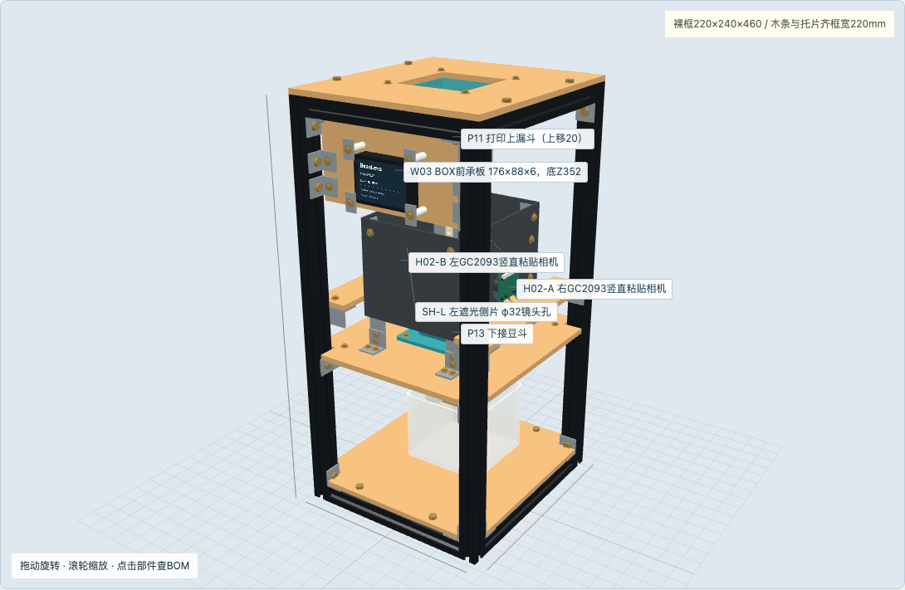
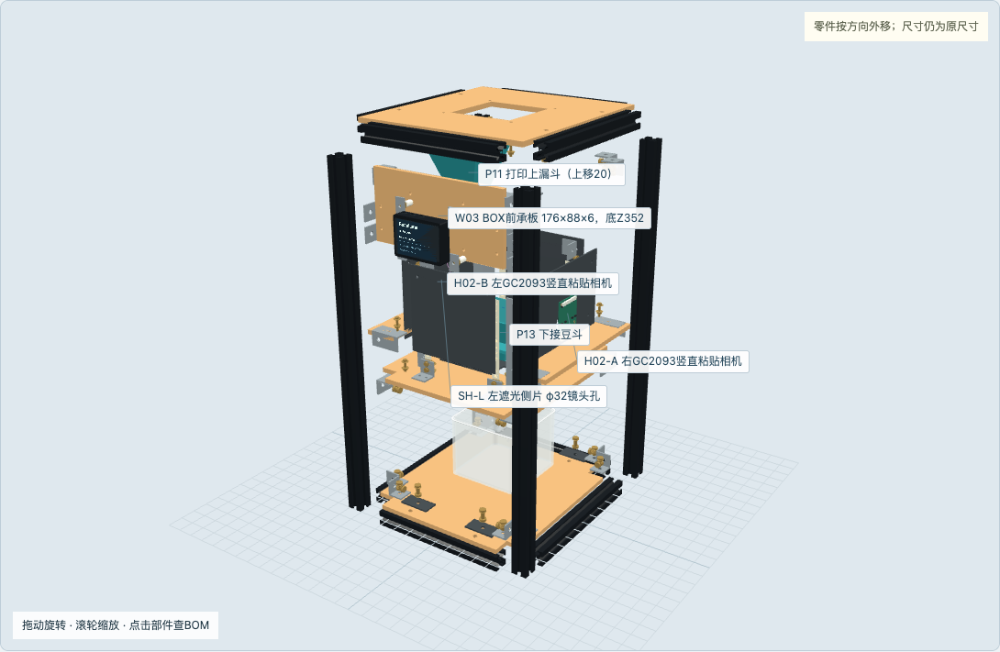
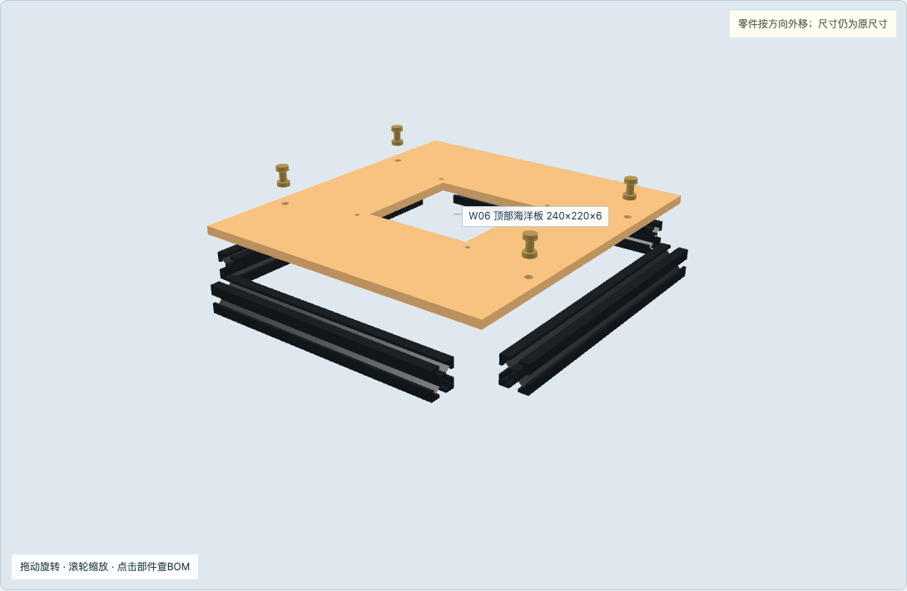
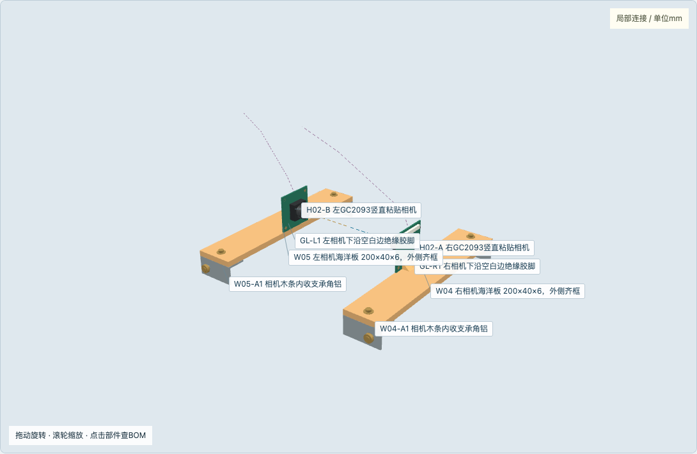
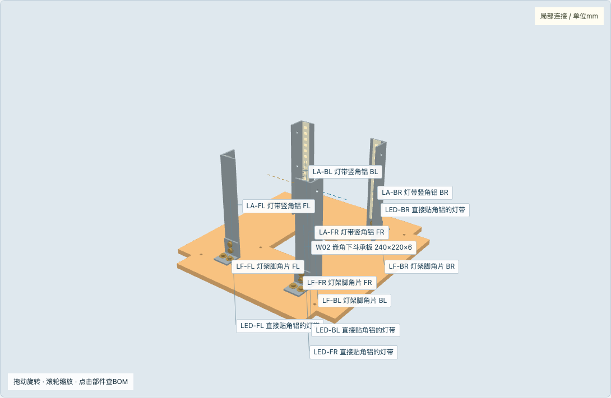
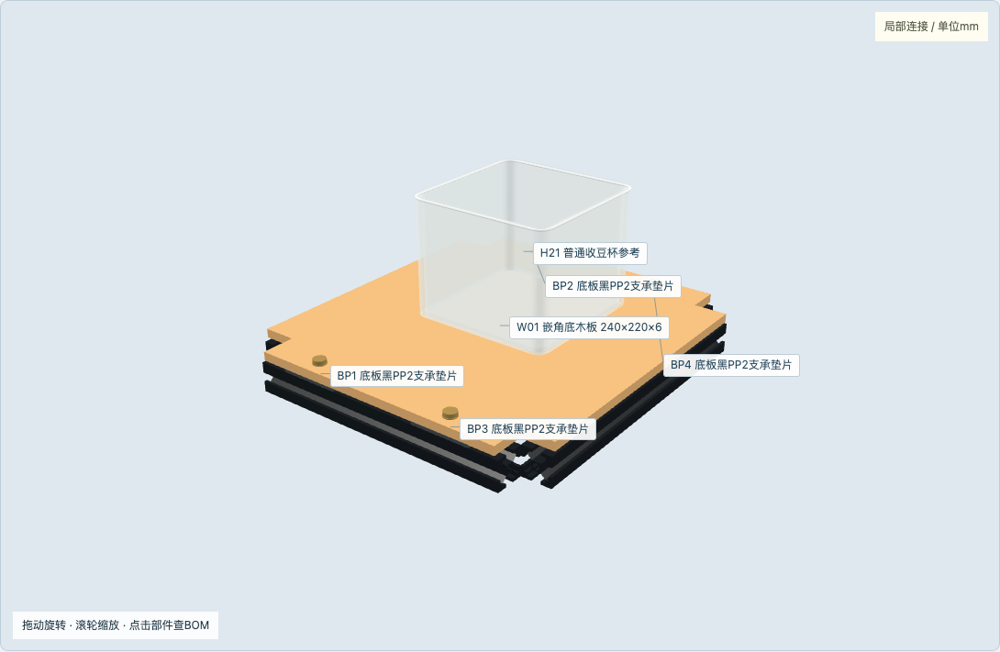
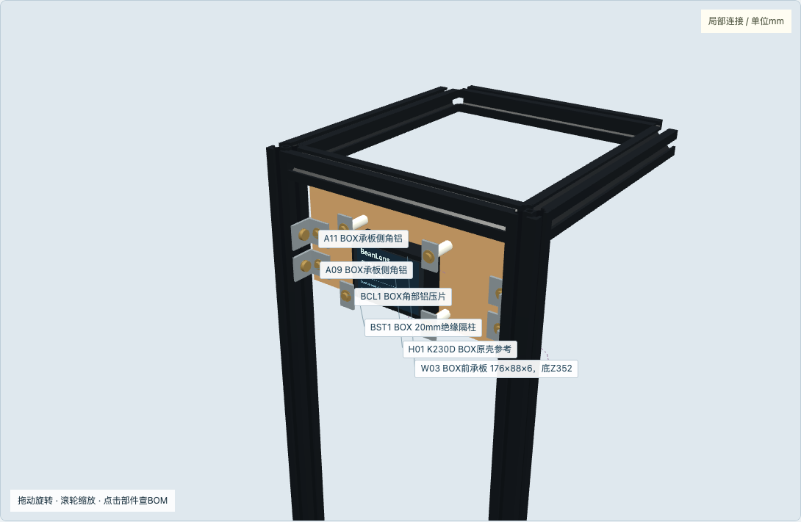
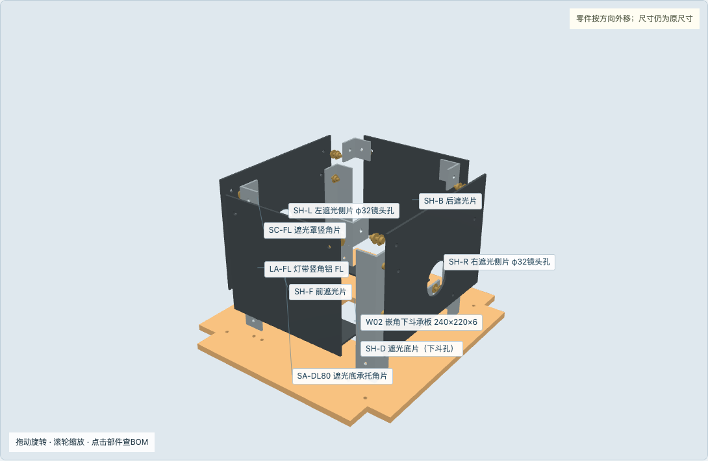
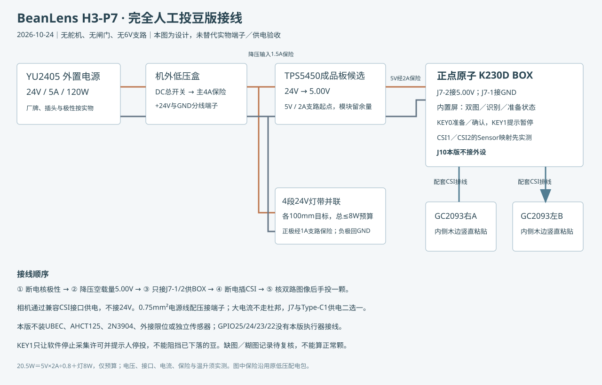
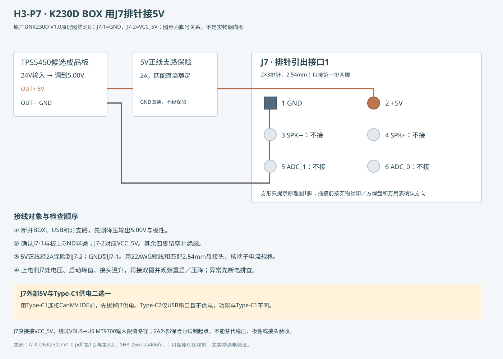

无相机打印底座；200×40相机木条齐框；五片遮光罩上方敞开。

尺寸同一比例；展开距离只用于认件，不是装配间隙。

顶海洋板240×220×6放在型材上面；取消的是下方遮光顶盖。

PCB竖直放，镜头水平；旧打印座和M2隔柱全部取消。

灯带仍直接贴20×20角铝平面；相机更近，需要重新调焦与曝光。

240×220×6，四角22.5缺口；上下豆路及下斗法兰保持。

整组上移128mm；背板底352顶440；上对托片额外下让30避开框角码。

取消SH-T顶盖及SA-T四角片，减少8套M3×10；其余罩片仍固定。

J7-2为5V，J7-1为GND；仅相机／BOX安装位置变化。

外供绕过USB输入限流；J7与Type-C1供电二选一，实物方向先确认。

BOM53行；两个漏斗不用重打，相机打印座和顶盖不再安装。